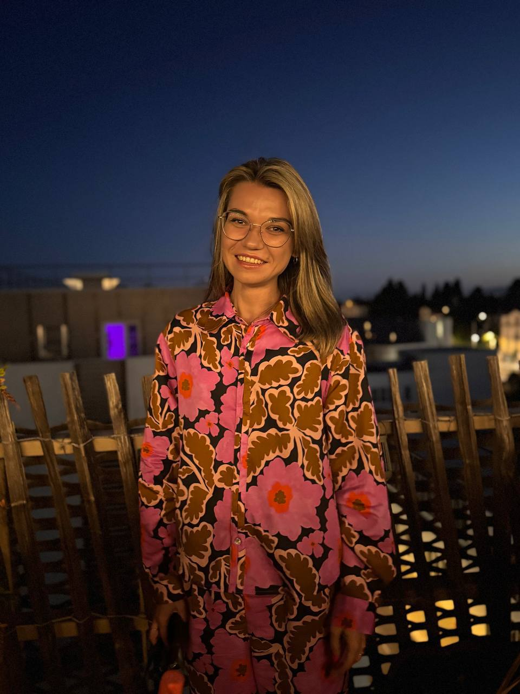

Прибытие
Обычно первые год–два
Эйфория, круассаны и «я справлюсь». Вы главный герой — пока работает адреналин и всё вокруг ново.

Дарья Терёхина представляет
Фильм о том, как перестать быть массовкой в стране, куда вы переехали.
Помогаю эмигрантам снова почувствовать «я на своём месте» — в работе и жизни. Один на один, на русском, онлайн.
В главной роли вы · сценарий ваш · коуч Дарья Терёхина · снято в Монпелье · 4 года в эмиграции · без каскадёров и дублёров
Сначала всё как в трейлере: новые улицы, новая жизнь, «у меня точно получится». Потом приходит реальность — и однажды вы замечаете, что играете эпизодическую роль в собственной жизни.
Обычно первые год–два
Эйфория, круассаны и «я справлюсь». Вы главный герой — пока работает адреналин и всё вокруг ново.
Когда новизна закончилась
Статус обнулился, профессия не работает, деньги тают, жизнь на паузе. Вы всё ещё в кадре, но уже на заднем плане.
Когда решите
Вы снова главный герой — и это не зависит от страны, паспорта и уровня французского. Этот акт мы пишем вместе.
Я работаю с теми, кто хочет твёрдое чувство «я герой своего фильма» — в любой стране, где живёт и работает.
Их я слышу почти на каждом знакомстве. Половину когда-то говорила сама.
— Там я была кем-то. Здесь я никто.
— Моя профессия здесь не работает.
— Хочу своё дело. Но как, с французским А1?
— Да всё нормально, мам. Обустраиваюсь.

Красноярск, 18 лет бизнеса, своё маркетинговое агентство и наставничество для бизнес-трекеров. В 2022-м — чемодан, 3 000 $ и маршрут через Казахстан и ОАЭ во Францию. Первый год: 18 переездов, французский А1 и статус «невидимка».
Сегодня у меня своя практика в Монпелье. Я не утешаю и не раздаю рецептов: задаю неудобные вопросы, называю вещи своими именами и помогаю вам написать третий акт. Ломать себя — самая убыточная стратегия в мире. Проверено лично.
Образование: Coaching.Up University, Level 1 (программа по стандартам ICF) и Level 2 (программа аккредитована EMCC и Association for Coaching). Сейчас прохожу сертификацию ICF на уровень PCC.
Я запускаю новое направление и хочу услышать не чаты, а живых людей. Приглашаю 20 русскоязычных эмигрантов на бесплатное интервью о том, как у вас на самом деле устроены работа и жизнь в новой стране.
Напишите мне в Telegram слово «кастинг» — пришлю ссылку, чтобы выбрать время.
Начните с бесплатного знакомства: 30 минут, чтобы понять, есть ли между нами мэтч и какой формат вам нужен.
0 €30 минут, онлайн
90 €60 минут, оплата при бронировании
1 200 €или 3 платежа по 400 €, или 113 000 ₽. Эта цена — максимум до декабря 2026.
Программу на 3 месяца обсуждаем на знакомстве: согласуем цель и частоту встреч, подписываем договор, и только потом я отправляю ссылку на оплату. Оплату в €, $, ₽, ₸ или ₴ можно согласовать в переписке.
С этими запросами нужен психолог — я подскажу, к кому обратиться. Коучинг не психотерапия.
Только один на один. Диаспора маленькая — всё, что вы приносите на сессию, остаётся между нами. По договору.